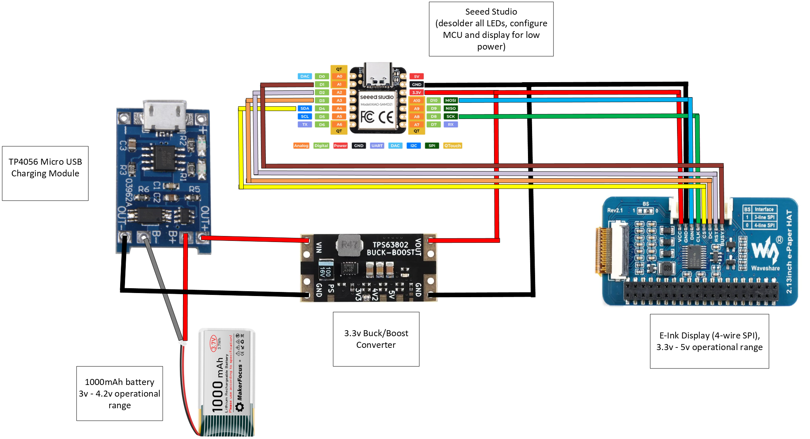
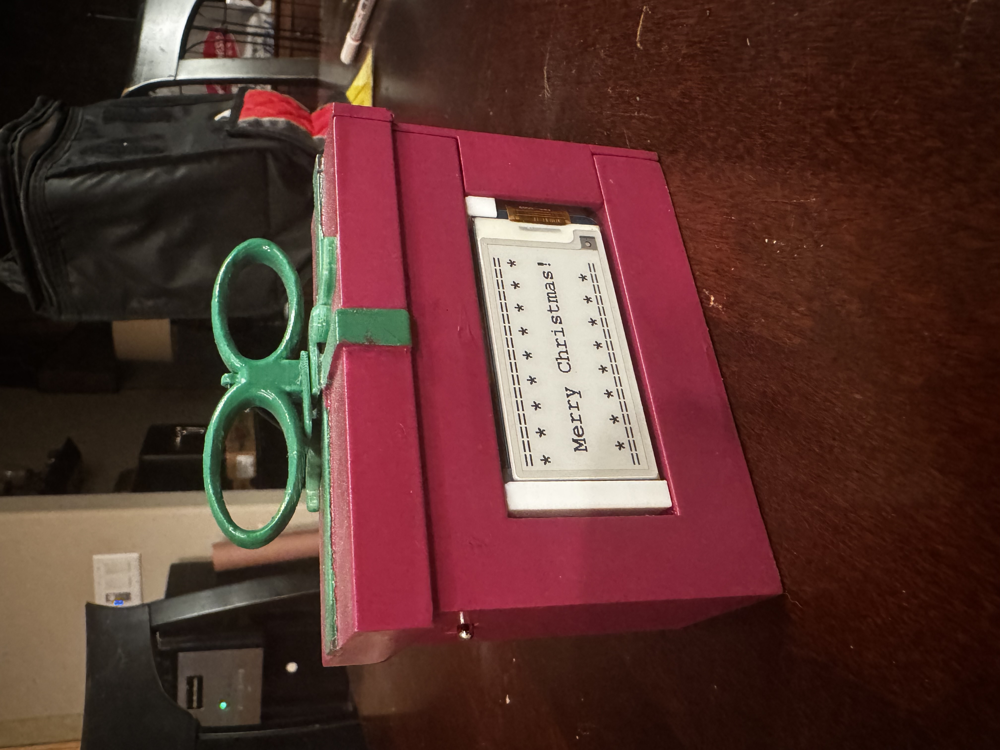
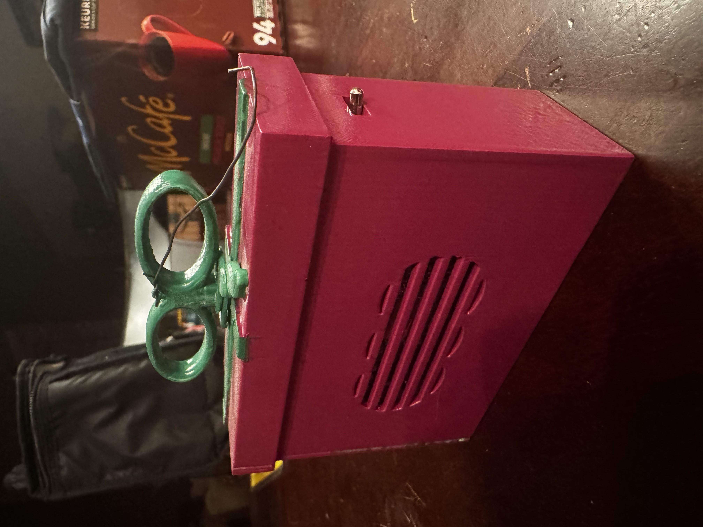
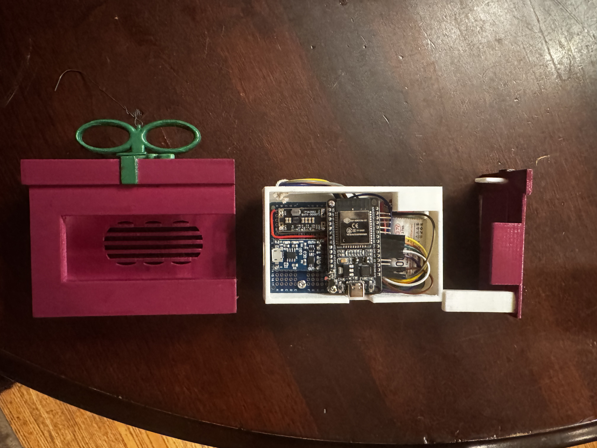

Personal Build | Embedded Hardware
ESP32 Ornament
This project was intended to create a holiday ornament that behaves like a small embedded product rather than a static decoration. The build combines an ESP32, a charging module, a buck-boost converter, and an e-ink display to show different Christmas-themed messages in a battery-powered enclosure.
What makes the project interesting is the combination of system design and physical presentation. The electronics needed to charge safely, regulate power for the display and controller, and fit into a compact ornament enclosure that still looked intentional as a finished object. That made it a strong exercise in moving between embedded hardware, display integration, and enclosure design.
Project Overview
The goal of this build was to create an ornament that could display different Christmas-themed messages on an e-ink screen while staying self-contained and rechargeable. That meant planning around the display, the ESP32 control path, the power architecture, and the shape of the enclosure all at the same time.
Instead of treating the enclosure as an afterthought, the project was structured from the start as both an electronics problem and a product packaging problem. The electronics stack had to be compact and practical, while the final result still needed to look like a finished ornament rather than an exposed prototype.
Architecture
- A TP4056 charging module handles battery charging from Micro USB input.
- A 1000 mAh battery provides the portable power source for the ornament.
- A buck/boost converter regulates the voltage for the rest of the system.
- An ESP32 acts as the main controller for message logic and system behavior.
- An e-ink display communicates over a 4-wire SPI interface and defines the visual output of the ornament.

Design Thinking
From a systems perspective, the project is really about integration. The charging module, battery, buck-boost stage, ESP32, and display each solve a different part of the problem, but they only become useful when arranged into a reliable and physically compact assembly.
That makes the ornament a strong example of product-style engineering: the electronics, mechanical layout, and final presentation all influence one another.
Physical Build
The STL files for this project reflect the mechanical side of that work. The printed parts divide the ornament into logical pieces so the assembly can support the screen, internal electronics, and the decorative outer form.
Keeping those parts separate makes it easier to iterate on fit, tolerances, and assembly without having to redesign the entire object from scratch.



3D model views
Interactive STL previews of the printed ornament components.
These model views let the individual printed parts be inspected separately before they are assembled into the final ornament.
Body
Loading `Body.stl`...
Bow
Loading `Bow.stl`...
Enclosure
Loading `Enclosure.stl`...
Enclosure Closing Side
Loading `Enclosure Closing Side.stl`...